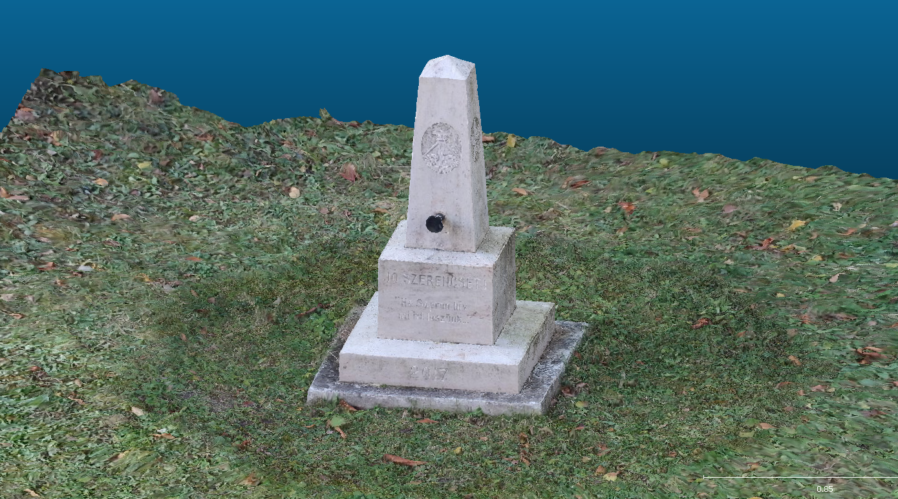

Pontfelhő és modell készítése okostelefonnal készített képekből
Projekt kulcsszavak
Soproni Egyetem, botanikuskert
Xiaomi Redmi Note 10 Pro
Agisoft Metashape
A projekt még egy egyetemen elkészített feladat, melynek célja volt, hogy jobban megismerjük az amatőr kamerás fényképek fotogrammetriai feldolgozásának lehetőségeit. Akkoriban még nem különösebben érdekelt a téma, így nem tulajdoítottam túlságosan nagy jelentőséget a feladatnak.
Évekkel később ismét előkerestem az akkori eredményeket, és ide is feltöltöttem őket, többnyire érdekességképpen, valamint azért, mert a jövőben tervezem a kiegészítését.
Fényképek importálása, EXIF adatok és kamera paraméterek beállítása
Ritka pontfelhő készítése és kamerahelyzetek meghatározása
Koordinátarendszer beállítása és illesztőpontok felvétele
Kamera kalibráció, hibák csökkentése, pontfelhő tisztítása
Sűrű pontfelhő,háló,textúra elkészítése